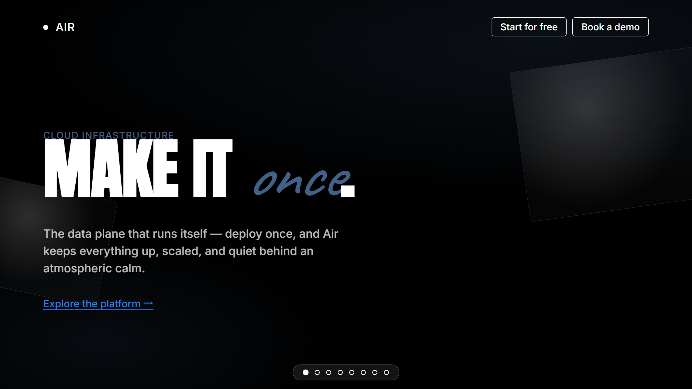

Air
midnight sky through glass sculpture
• Ghost buttons — transparent fill + 1px white border + white text, 8px radius — the only nav CTA treatment; no filled colored buttons anywhere
• Full-bleed dark photographic sections (clouds, glass sculpture) with centered headline overlays, no container constraint — imagery carries the emotion
• Compressed display headline at 259px/900 weight/0.85 leading, uppercase, bleeding to viewport edges, used sparingly for maximum-impact statements
• Full-bleed dark photographic sections (clouds, glass sculpture) with centered headline overlays, no container constraint — imagery carries the emotion
• Compressed display headline at 259px/900 weight/0.85 leading, uppercase, bleeding to viewport edges, used sparingly for maximum-impact statements